小爱
《机甲大师》第二集：前所未有的机器人动画，让科技穿越次元壁
RoboMaster 同名动画《机甲大师》（RoboMasters:The Animated Series）是由大疆创新联合 DandeLionAnimation Studio 和 GONZO 打造的一部动画，讲述的是，一名热爱机器人的大学生方单单，因童年不好的回忆而不愿意接触机器人比赛，却意外加入了机器人社团，在与同伴碰撞和磨合中，开始了疯狂的大学旅程。《机甲大师》每周五 21:30 在腾讯视频更新，今天第二集上线。
《机甲大师》上集讲到，方单单和清水湾工作室在 RoboMaster 校内赛中输掉比赛。队长郑准因为方单单不听指挥，将他痛骂一顿，而方单单也因比赛勾起了不好的童年回忆，两人就此结下梁子。方单单放话，再也不和“机甲大师”有任何瓜葛。
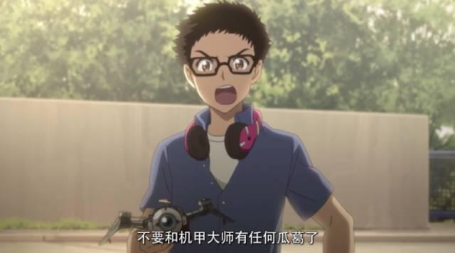
上集剧照
第二集中，郑准蓄意策划了一场无人机竞速赛，这场比赛是否让方单单对“机甲大师”的态度有所转变，又让主角们擦出了什么火花？
◆◆◆
第二集有几位新人物出现，其中，在 RoboMaster 校内赛上，你有没有注意到一个为方单单激动呐喊的女生呢？那是方单单的青梅竹马小爱。
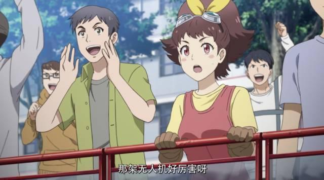
小爱紧张地看比赛在青春校园生活中，小爱就是一个充满活力的角色，她是方单单从小的玩伴，性格如同名字，单纯可爱。她也是电子元件店老板的女儿，因此对电子元件非常熟悉。
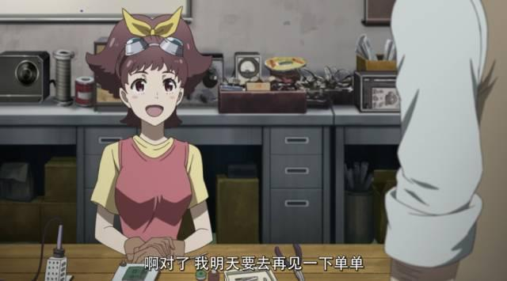
小爱在电子元件店里
许多年前，方单单结识了一位邻居大哥，从而接触并喜欢上了机甲大师比赛，然而后来邻居大哥因为某些原因，让对机甲大师充满期待的单单失望，方单单还看到邻居大哥被队友殴打，因此留下了对机甲大师比赛的心理阴影。小爱与方单单一同经历了方单单对比赛从热爱到逃避。
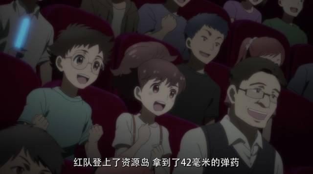
两人一起看 RoboMaster 比赛
因此，小爱也非常希望方单单能走出阴霾，勇敢追求自己的机器人梦想。在剧中，小爱在方单单校内赛失败后鼓励他，在无人机竞速赛时，带上备用电子元件赶到校园，做他的后盾，跟在方单单的身边。
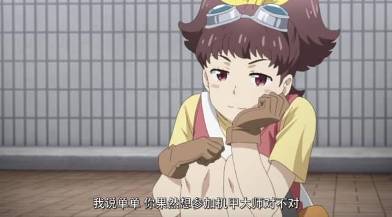
小爱望着方单单
这么可爱的女生，到哪都会讨人喜欢，而看到她就会兴奋得脸红的，就是这个直率小胖子，王俊。
王俊
王俊是方单单的室友，虽然机器人研发基础薄弱，却十分渴望加入机甲大师比赛。他也是一名科技爱好者，在剧中的竞速比赛，他凭借专业的竞速无人机，将其他对手远远地甩开。
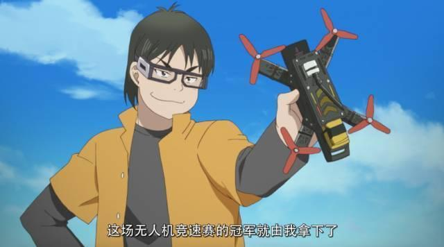
王俊参加无人机竞速赛他憨厚粗心，在比赛中稍微领先就得意忘形，看到漂亮小姐姐就会两眼放光。这个鲁莽的小胖子，在艰苦的机甲大师比赛中会如何成长？我们继续期待吧！
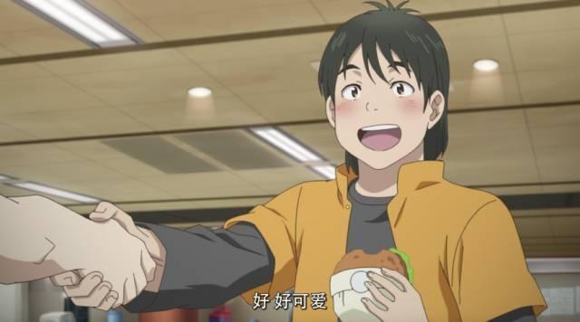
王俊握着小姐姐的手
《机甲大师》是一部贯穿着科技元素的动画，机器人、无人机、电路、代码……这些都是其他动画中少有出现的。而本集出现的“无人机竞速赛”，也是主角们磨合的一个关键的事件。
无人机竞速赛
清水湾工作室在校内赛失败后，没有新生愿意加入他们，而方单单的技术基础正好符合他们的标准，队长郑准就蓄意策划了一场无人机竞速赛，想借此观察方单单的实力。
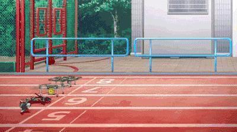
无人机竞速开始无人机竞速就是让无人机快速行驶，穿梭在事先设置的障碍地形中，看谁先到达终点。而小胖同学戴的是 FPV（First Person View）眼镜，可以让选手以无人机的第一人称视角比赛，有身临其境的体验，从而更好地控制无人机。
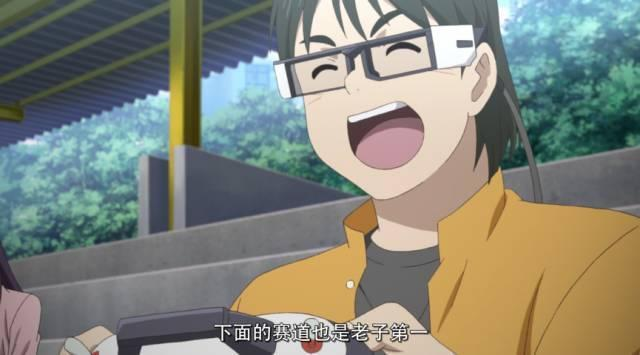
王俊戴着 FPV 眼镜其实，动画中透明的 FPV 眼镜是想象出来的技术，现实中并不存在。现在人们已经实现的技术是像 DJI Goggles 这样的沉浸式 VR 眼镜。
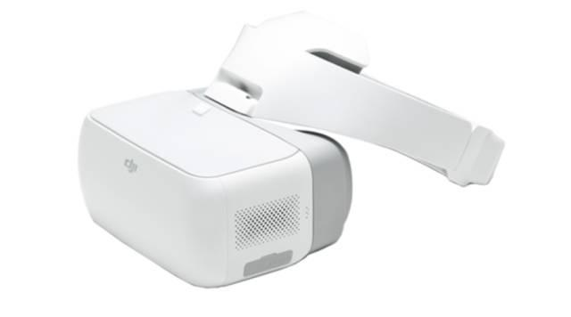
DJI Goggles
动画中，竞速的路线设置在校园中，无人机需要精准地穿过圆环后快速上升、避开树枝等障碍物飞梭森林、快速转向和跑 S 形轨道。现实中的竞速也是如此，在考验无人机性能的同时，更考验选手的操作水平和心理素质。
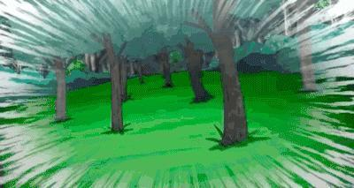
动画中要求无人机穿过小圆环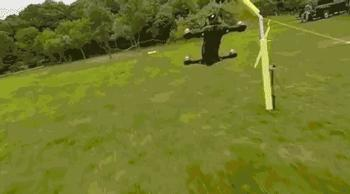
现实中的比赛画面
二旋翼无人机
一般在竞速中都会使用四旋翼无人机，因为“翅膀”多了，直线飞行速度也就更快了。而动画中，方单单却使用二旋翼无人机 KAKA，它可以调整螺旋桨的攻角，使螺旋桨产生更大的上升力。
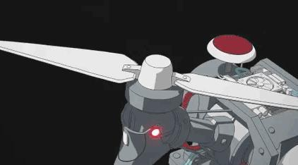
改变螺旋桨角度
在竞速的最后一段，方单单急于赶超郑准，直接将无人机驶入宿舍楼里。无人机能够在狭窄的宿舍里快速转弯、穿行，迅速地旋转来改变航向，也是得益于二旋翼的灵活性。但是将无人机驶入宿舍这种行为非常危险。
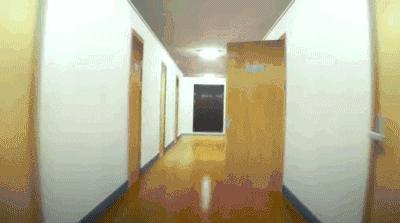
无人机在宿舍中穿梭
其实，二旋翼无人机在市面上非常少见，因为螺旋桨数量少，需要额外的电机旋转机臂以进行控制算法设计，机械设计和程序设计都非常复杂。所以本集一开始，郑准才会怀疑 KAKA 是不是方单单自己制作的。
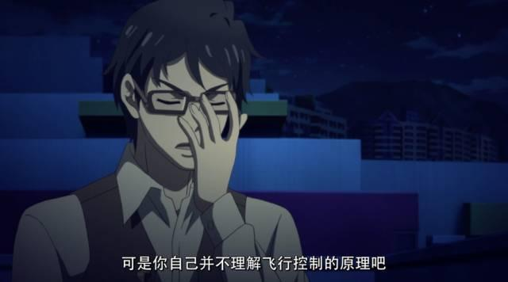
郑准与方单单对话动画中的 KAKA，作为一台小巧的飞行器，不仅有变形的结构，还能搭载变攻角的技术，是非常难实现的，在现实中，目前的技术水平还实现不了，这部动画是设定在未来十年的情景，或许十年后我们就能见证这种技术的成型了。
RoboMaster 比赛中的无人机
现实中的 RoboMaster 比赛也有无人机这一角色——空中机器人。但对于空中机器人，比赛注重的不是飞行速度，而是智能控制。比如，空中机器人需要自主识别一个立柱，然后将自己准确地停在立柱上，立柱被激活后，团队便可以获得加成。
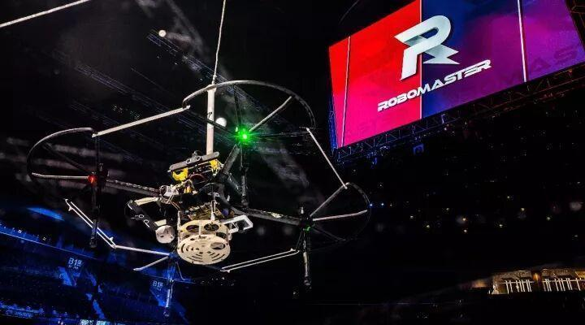
RoboMaster 比赛中的无人机
在之前，空中机器人只能投放弹丸，让弹丸不带初速度地自由下落，攻击敌方。而在 2018 赛季中，空中机器人可以搭载发射机构，对地面机器人发射弹丸。如何在轻便的空中机器人身上搭载繁重的发射机构，和解决发射弹丸的反作用力，成为了参赛选手的难题。
◆◆◆
《机甲大师》是动画中前所未有的机器人赛事题材，在讲述学生们热血沸腾的故事的同时，也在二次元中呈现出，现代科技和未来科技碰撞的火花。
不管是回忆青春那些不负梦想的故事，还是想在动画中漫游科技世界，我想，你一定都可以在《机甲大师》中找到共鸣。
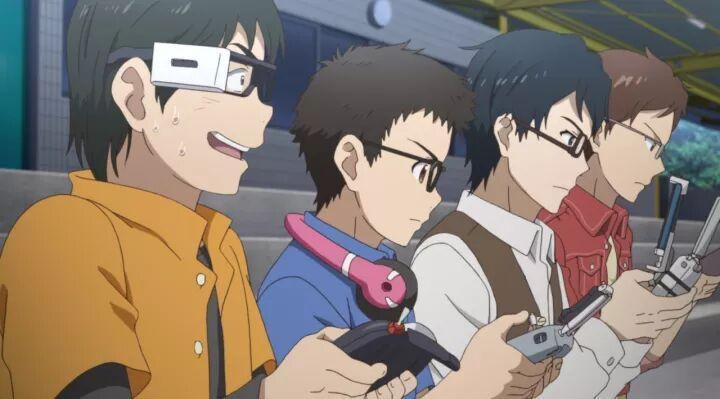
主角们全神贯注地比赛
观看指南
腾讯视频，每周五 21:30，和小R 一起追动画吧！阅读原文也可观看《机甲大师》第二集。
周边福利
登陆新浪微博，转发@RoboMaster机甲大师在 10 月 13 日的活动微博，就有机会获得：
1、RoboMaster 初代限量珍藏版步兵机器人；
2、动画定制贴纸。
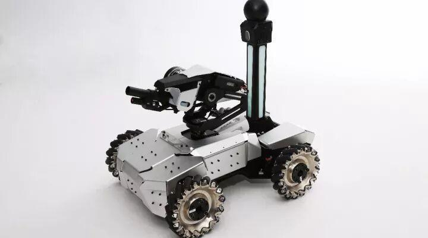
RoboMaster 初代步兵机器人
扩展阅读：
5、RoboMaster超燃主题曲！不论现实和国漫，好想陪你去看机器人比赛啊！
阅读原文进入腾讯视频观看《机甲大师》第二集。
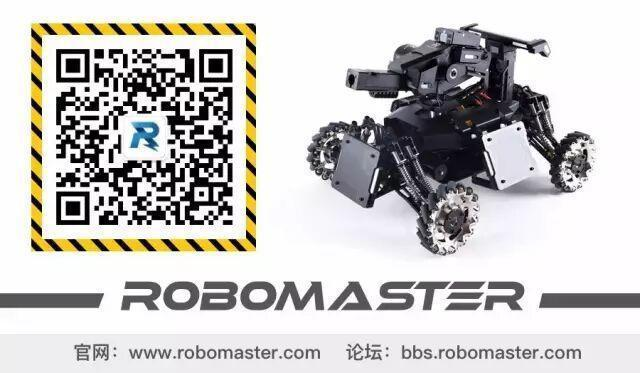
转自RoboMaster官方微信平台
原文链接：http://mp.weixin.qq.com/s/llyttNwpqxWsles3Vy3k_g

微信扫一扫
关注该公众号